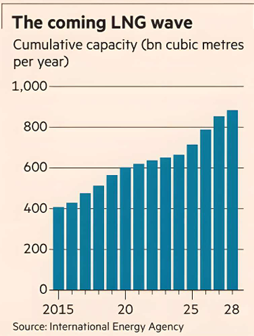

One of the big themes in the energy sector is that oil is no longer a growth market. Demand for the fuel, the bulk of which is consumed in transport, is sluggish. Former growth engines such as China are being throttled by the rapid rollout of electric vehicles, and there is spare capacity sitting on the sidelines.
Hence the growing focus, among companies that provide metaphorical picks and shovels to energy producers, on liquefied natural gas. The supercooled fuel is one of the fastest-growing areas in energy as electricity demand booms and countries seek to transition out of coal. Baker Hughes’ $13.6bn swoop on Chart Industries is a bet on this commodity’s future.
That drillers need to build a strategic alternative to their traditional oil business is clear. According to the International Energy Agency, global oil investments are expected to drop 6 per cent this year. Shares in big oil services groups Halliburton and SLB are down 33 per cent and 24 per cent respectively over the past 12 months.
Baker Hughes has managed to buck the trend; its stock is up a fifth thanks to its pivot to LNG. Its “gas technology” segment now makes up more than a third of group revenue and is its fastest growing division, with sales up 7 per cent in the quarter ending in June.
Buying Chart, which generated $4.1bn in revenue last year from the sales of equipment such as cryogenic tanks and cooling systems, will bolster Baker Hughes’ position in the LNG service sector and in new markets such as data centres, new energy and more.
This empire building does not come cheap. Chart had said in June that it would merge with fellow industrial group Flowserve. Gatecrashing the deal meant Baker Hughes had to offer a 22 per cent premium to Chart’s closing price on Monday and an 82 per cent premium to where the stock was trading less than four months ago.
Yet that is not an insurmountable obstacle. Baker Hughes expects to cut $325mn of costs that, taxed and capitalised, exceed the value of the 22 per cent premium it is paying. And its offer puts Chart’s enterprise value at 11 times forward ebitda, similar to where Flowserve is trading.
The biggest risk is timing. LNG is growing, but it has also already attracted a lot of investment. Between 2026 and 2028, the global LNG market is set to experience its largest ever capacity growth, says the IEA. That could push prices lower and prompt groups to slow investment. In an industry that is not unfamiliar with boom and bust cycles, Baker Hughes will be hoping it has timed its bet well.